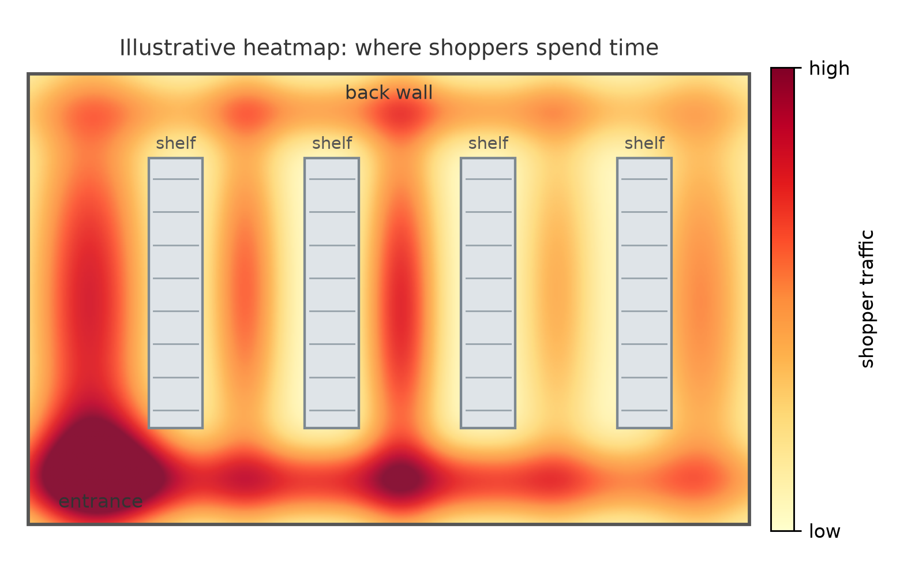

Sony Electronics · Staff Machine Learning Engineer · 2020 to 2022
Retail Applications
Shelf-mounted cameras that identify products and flag gaps in stock, running on the edge.
Overview
- Organization
- Sony Electronics
- Role
- Senior machine learning engineer
- Period
- 2020 to 2022
At Sony Electronics I helped develop the machine learning pipelines for in-store retail applications: mounting cameras on shelves, training models to detect and identify SKUs, and alerting stock personnel to gaps in inventory, all running on the edge.

01
Rearchitecting YOLO for Edge Inference
Deploying on edge accelerators comes with unique challenges, including the limited set of operations available on the IMX sensor. This meant replacing layers with supported operations and limiting the output tensor dimensionality by reducing the number of anchors.
02
Planogram and Gap Detection
Using YOLO we located objects on the shelf with high recall. Cropping these detections and feeding them to an embedding model gave better SKU identification than YOLO's class probabilities alone.

03
Patterns of Life
Human detection with identities obscured let us maintain heatmaps of traffic through the aisles. Knowing where the high-traffic areas are lets retailers give prospective suppliers more granular cost and sales projections.
Shelf photo: UHT milk and specialist milk, Coop, Cromer by Kolforn (CC BY-SA 4.0), Wikimedia Commons; cropped, with illustrative annotations added. The traffic heatmap is an illustration, not project data.
Next project